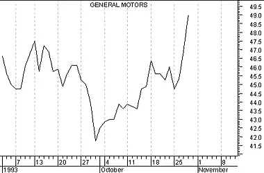
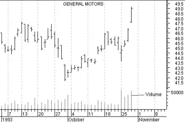

Introduction - Charts
Charts
The foundation of technical analysis is the chart. In this case, a picture truly is worth a thousand words.
Line charts
A line chart is the simplest type of chart. As shown in the chart of General Motors in Figure 2, the single line represents the security's closing price on each day. Dates are displayed along the bottom of the chart and prices are displayed on the side(s).
Figure 2

A line chart's strength comes from its simplicity. It provides an uncluttered, easy to understand view of a security's price. Line charts are typically displayed using a security's closing prices.
Bar charts
A bar chart displays a security's open (if available), high, low, and closing prices. Bar charts are the most popular type of security chart.
As illustrated in the bar chart in Figure 3, the top of each vertical bar represents the highest price that the security traded during the period, and the bottom of the bar represents the lowest price that it traded. A closing "tick" is displayed on the right side of the bar to designate the last price that the security traded. If opening prices are available, they are signified by a tick on the left side of the bar.
Figure 3

Volume bar chart
Volume is usually displayed as a bar graph at the bottom of the chart (see Figure 4). Most analysts only monitor the relative level of volume and as such, a volume scale is often not displayed.
Figure 4

Figure 4 displays "zero-based" volume. This means the bottom of each volume bar represents the value of zero. However, most analysts prefer to see volume that is "relative adjusted" rather than zero-based. This is done by subtracting the lowest volume that occurred during the period displayed from all of the volume bars. Relative adjusted volume bars make it easier to see trends in volume by ignoring the minimum daily volume.
Figure 5
Figure 5 displays the same volume information as in the previous chart, but this volume is relative adjusted.
Other chart types
Security prices can also be displayed using other types of charts, such as candlestick, Equivolume, point & figure, etc. For brevity's sake, explanations of these charting methods appear only in Part II.